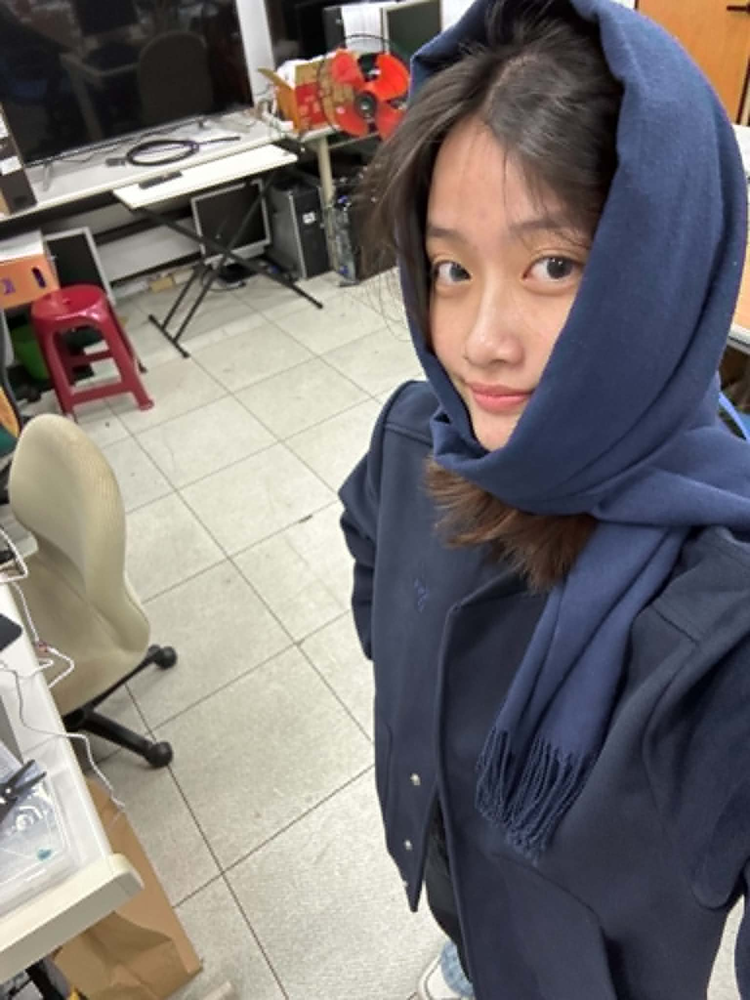

preserve the original person and face, keep the same composition, change the scarf to a beautiful red scarf, add elegant floral patterns on the scarf, detailed flower decorations, realistic fabric texture, natural lighting, high quality, highly detailed
blurry, low quality, distorted face, deformed body, bad anatomy, extra fingers, unrealistic scarf, messy floral patterns, ugly, watermark, text, oversaturated
這是我第一次使用 ComfyUI 來生成圖片。一開始看到這麼多節點和連接線，真的有點不知道該怎麼操作。後來跟著老師的教學一步一步嘗試，才慢慢了解基本的使用方法。
這次我想把照片中的圍巾改成紅色，再加上一些花朵圖案。我原本以為只要輸入提示詞，AI 就會直接生成我想要的圖片，但實際操作後發現沒有那麼簡單。有時候生成的結果跟想像中不太一樣，還需要修改提示詞和調整參數。
雖然過程中遇到一些困難，但看到自己成功生成圖片的時候，還是覺得很有成就感。透過這次作業，我學到了一些 ComfyUI 的基本操作，也發現 AI 生成圖片很有趣。希望以後可以再多嘗試不同的風格和功能。